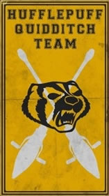
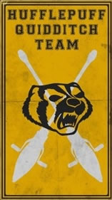

Grifinória
"Quem Sabe sua morada é a Grifinória; Casa onde habitam os corações indômitos; Ousadia, sangue-frio e nobreza destacam os alunos da Grifinória dos demais;" - O Chapéu Seletor
Grifinória é uma das quatro Casas da Escola de Mágia e Bruxária de Hogwarts, fundada por Godric Gryffindpr. Seu animal símbolo é o leão, e suas cores são o vermelho e o dourado. A professora Minerva McGonagall é a Diretora mais recente da Casa. Sir Nicholas de Mimsy-Porpington, também conhecido como "Nick Quase-Sem-Cabeça", é o fantasma residente da Grifinória. As características próprias dos estudantes selecionados para esta casa são companheirismo e coragem. Atores, cantores e atlétas muitas vezes são classificados nesta casa. Dumbledore também era desta casa e foi o professor de transfiguração antes de se tornar diretor. A Grifinória certamente formou grandes buxos como, Harry Potter, Hermione Granger, Rony, Fred, Jorge, Gina, Gui, Carlinhos, Percy, Arthur e Molly Weasley, Thiago e Lilian Potter, Neville Longboton que mais tarde se torna Diretor de Hogwarts, entre outros.
Lufa-Lufa
"Quem sabe é na Lufa-Lufa que você vai morar; Onde seus moradores são justos e leais; Pacientes, sinseros, sem medo da dor;" - O Chapéu Seletor
Lufa-Lufa é uma das quatro Casas da Escola de Mágia e Bruxária de Hogwarts. Sua fundadora é a bruxa Pamona Sprout. O Frei Gorducho é o fantasma residente da Lufa-Lufa. Esta é a mais inclusa das quatro casas e valoriza o trabalho duro, a paciência, a lealdade e o jogo limpo em vez de aptidão em seus membros. Seu animal símbolo é o texugo, e suas cores são o amarelo e o preto. A Professora Sprout é a Diretora da Casa da Lufa-Lufa. Newt Scammander era da Lufa-Lufa.
A Lufa-Lufa corresponde ao elemento terra, por isso seus alunos tem capacidades excepcionais em Herbologia.
 

Corvinal
"Ou será a velha e sábia Corvinal; A casados que tem a mente sempre alerta; Onde os homens de grande espírito e saber; Sempre encontrarão companheiros seus iguais;" - O Chapéu Seletor
Corvinal (do inglês "Revemclaw") é uma das quatro Casas da Escola de Mágia e Bruxária de Hogwarts, fundada por Rowena Revenclaw. Mesmbros dessa casa são caracterizados por sua perspicácia, inteligência, criatividade e sabedoria. Os alunos são os que tiram melhores notas, e são muito estudiosos. Suas cores oficiais são o azul e o bronze, e seu símbolo é uma águia. Um fato curioso é que no filme o símbolo é uma águia e no livro é um corvo. O fantasma da casa, que em vida era a filha da fundadora, é Helena Revenclaw, também conheceida como "Dama Cinzenta". Muitos grandes bruxos e bruxas vieram dessa casa, incluindo o Professor Filius Flitwick e Luna Lovegood.
A Corvinal corresponde ao elemento ar, por isso seus alunos tem aptidão para vôo, um exemplo é Cho Chang, apanhadora do time da Corvinal.
Sonserina
"Quem sabe a Sonserina será a sua casa; E ali fará seus verdadeiros amigos; Homens de astúcia que usam quaisquer meios para atingir os fins que antes colimaram; Sempre encontrarão companheiros seus iguais;" - O Chapéu Seletor
Sonserina é uma das quatro Casas da Escola de Mágia e Bruxária de Hogwarts, e é o lar dos estudantes mais espertos, engenhosos e ambiciosos. O seu animal símbolo é uma cobra e suas cores são o verde e o prata. O fantasma da casa é o Barão Sangrento. Fundada por Salazar Sonserina (em inglês Salazar Slytherin), a casa é quase totalmente composta por alunos de sangue puro, devido ao receio de seu fundador em relação aos bruxos e bruxas nascidos-trouxas. A Sonserina tem uma reputação ruim, com muitas pessoas afirmando que a casa é a fonte de muitos bruxos que se envolvem com as Artes das Trevas na Grã-Bretanha, com exemplos notáveis sendo Tom Marvolo Riddle, também conhecido como Lord Voldemort, e muitos de seus Comensais da Morte (seguidores), como Belatriz Lestrange, Severo Snape, Draco Malfoy, Lucio Malfoy, Narcisa Malfoy, entre outros. Tem uma rivalidade antiga com a Grifinória. O grande bruxo Merlin foi da Sonserina.